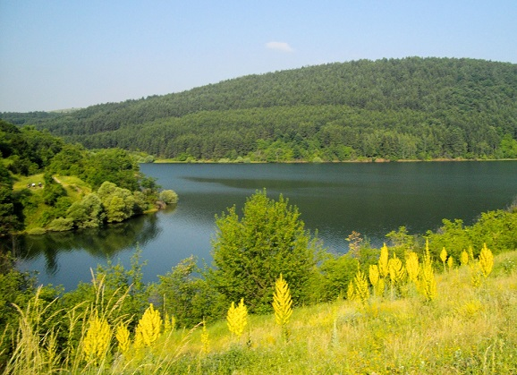
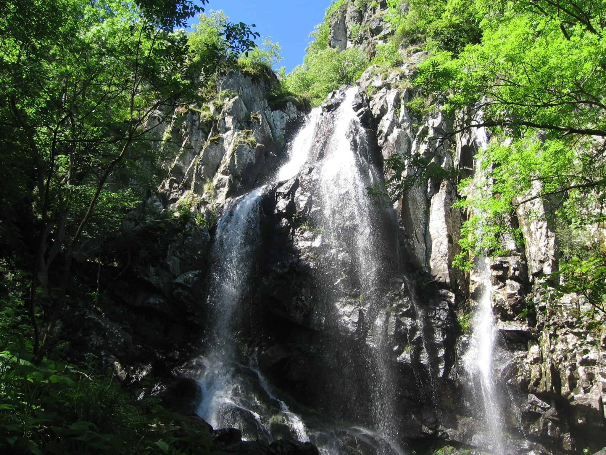

Vitosha National Park is located in central Bulgaria, in the country's southwest. It is situated between the Rodoli and Stara Planina mountain ranges. In total, the park area reaches 27 thousand hectares, while 24 thousand hectares are considered the property of forestry. The national park is rich in streams and springs, which give rise to many rivers. The largest is the Struma River, which flows into the Strymonikos Gulf of the Aegean Sea. In the protected area, stone rivers slowly move through the valleys under the influence of water gravity.
 Vitosha National Park and its flora and fauna. The main species of local flora is the oak tree. In addition, here you can find Scottish and Macedonian pine and spruce, including silver. Vitosha Park is located near Sofia with its large population. Still, it has conditions that are excellent for the existence of a diverse fauna: 10 species of amphibians, 150 birds, 12 reptiles, 50 mammals, and 600 invertebrates. Vitosha is home to bears, wild boars, martens, badgers, and deer. The park includes two national reserves, whose names are “Torfeno Branishte” and “Bystrishko Branishte”. Peat reserves are concentrated on the lands of Torfeno Branishte, with a total area of 728.8 hectares. On local peat bogs there are 500 species of duckweed and approximately 300 species of moss. Among the bushes here, you can see blueberries, junipers, and willows. The area of the Bystrishko Branishte Reserve is 1061 hectares. It was organised to protect the primary ecosystem, which consists of coniferous trees. The reserve has been part of the UNESCO World List Program “Man and the Biosphere” since 1977.
 Vitosha National Park and its attractions. Vitosha National Park boasts a developed recreational infrastructure. About 1.5 million tourists visit it every year. As a rule, the routes are concentrated in the northern part of the national park - the best ski slopes are there. Hiking, mountain sports, sports aviation, rock climbing and mountaineering are popular. Tourists can reach the mountains located in a protected area using three cable lifts: “Simeonovo-Chalet Aleko”, “Dragalevtsy-Bai Krasto-Goli Vrah”, and “Knyazhevo-Kopitoto”. There are two ski centres in the park: Konyarnika Vetrovala and Aleko. The last of them is the oldest in Bulgaria. It is located at an altitude of 1800 meters. Equipment includes chairlifts (two), portable and stationary tugs, and a cable car. The centre of the “Vetroval Stud Farm” is located at an altitude of 1507 meters, with portable tugboats operating here. In the Vitosha National Park, you can see the Dukhlata Cave, the longest in Bulgaria. Its length is 17 kilometres. Duhlata Cave, with its various stalagmite and stalactite formations, rivers and ponds, is considered the most beautiful in Bulgaria. Boyana Falls is also famous among park visitors. In the vicinity of Vitosha Park, there are such famous attractions as the Church of St. Theodore Stratilates, Dragalevsky Monastery, the monastery of St. Nicholas of Miriklei, and Boyana Church. Well-marked roads lead to Vitosha National Park from several settlements: Zheleznitsa, Bystritsa, Simeonovo, Dragalevtsi, Boyana, Knyazhevo, Vladaya, Kladnitsa.